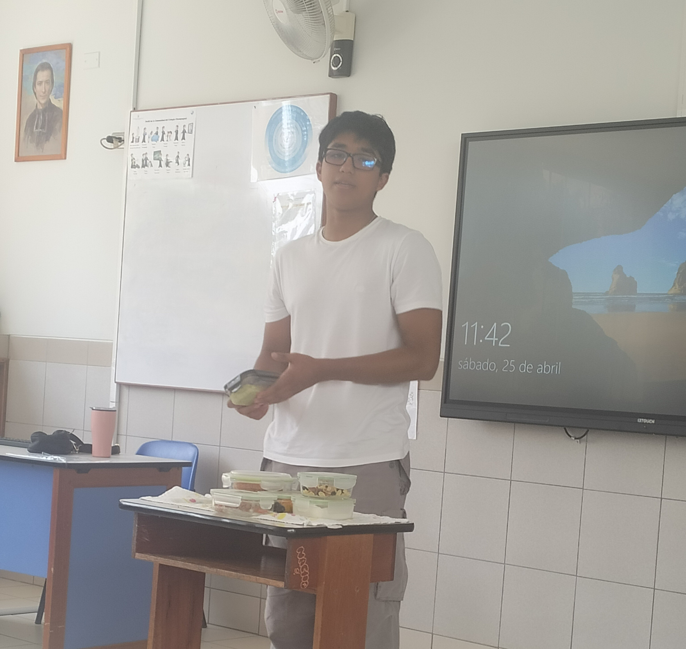

Experiencias CAS
⭐ ¿Qué son las Experiencias CAS?
Las experiencias CAS son actividades específicas que permiten desarrollar habilidades personales y sociales a través de la práctica de creatividad, actividad y servicio.
Las experiencias CAS son actividades específicas que permiten desarrollar habilidades personales y sociales a través de la práctica de creatividad, actividad y servicio.

Manteniéndose saludable
Presentación de mi habilidad extracurricular.
Ver más
📸
img/exp2.jpg
Experiencia 2
Descripción de la experiencia. Reemplaza este texto con el contenido real.
Actividad
📸
img/exp3.jpg
Experiencia 3
Descripción de la experiencia. Reemplaza este texto con el contenido real.
Servicio
＋
Agregar experiencia